Biomass Production Model: The Namibian Hake Fishery
Chapter 11.2
namibian-hake-biomass-production.Rmd
library(hbm4ecology)
library(rstan)
#> Loading required package: StanHeaders
#> Loading required package: ggplot2
#> rstan (Version 2.21.5, GitRev: 2e1f913d3ca3)
#> For execution on a local, multicore CPU with excess RAM we recommend calling
#> options(mc.cores = parallel::detectCores()).
#> To avoid recompilation of unchanged Stan programs, we recommend calling
#> rstan_options(auto_write = TRUE)
library(tidyverse)
#> ── Attaching packages ─────────────────────────────────────── tidyverse 1.3.1 ──
#> ✔ tibble 3.1.7 ✔ dplyr 1.0.9
#> ✔ tidyr 1.2.0 ✔ stringr 1.4.0
#> ✔ readr 2.1.2 ✔ forcats 0.5.1
#> ✔ purrr 0.3.4
#> ── Conflicts ────────────────────────────────────────── tidyverse_conflicts() ──
#> ✖ tidyr::extract() masks rstan::extract()
#> ✖ dplyr::filter() masks stats::filter()
#> ✖ dplyr::lag() masks stats::lag()
library(GGally)
#> Registered S3 method overwritten by 'GGally':
#> method from
#> +.gg ggplot2
library(posterior)
#> This is posterior version 1.2.2
#>
#> Attaching package: 'posterior'
#> The following objects are masked from 'package:rstan':
#>
#> ess_bulk, ess_tail
#> The following objects are masked from 'package:stats':
#>
#> mad, sd, var
library(bayesplot)
#> This is bayesplot version 1.9.0
#> - Online documentation and vignettes at mc-stan.org/bayesplot
#> - bayesplot theme set to bayesplot::theme_default()
#> * Does _not_ affect other ggplot2 plots
#> * See ?bayesplot_theme_set for details on theme setting
#>
#> Attaching package: 'bayesplot'
#> The following object is masked from 'package:posterior':
#>
#> rhatThe Namibian hake fishery
Let us consider as a first example the data from the Namibian hake fishery. Two hake species (Merlucius capensis and Merlucius paradoxus) are targeted by this fishery. The data analyzed here concern the fishery operating in zones 1.3 and 1.4 of the International Commission for the South-East Atlantic Fisheries (ICSEAF) from 1965 to 1988.
Figure 1 – Location of the ICSEAF fishery areas 1.3 and 1.4 in the Southeast coast of Africa.
For further details about the fishery, we refer to the report from the International Commission for Southeast Atlantic Fisheries (ICSEAF (1989)) or to Hilborn and Mangel (1997) and McAllister and Kirkwood (1998).
The two targeted species are pooled in the dataset. The catches concern the total annual commercial catches of hakes (in thousand tons) realized by large ocean-going trawlers operating in the ICSEAF zones 1.3 and 1.4. The catches per unit effort data (CPUEs) are the catches per hours of fishing for a specific class of Spanish trawlers. As the CPUEs are standardized, they are considered here as a reliable index of abundance for the Namibian hake stock.
We rely on these data to model the dynamics of hake stock biomass through dynamic Biomass Production Models (BPM). A dynamic BPM is a voluntarily crude but useful simplification of some harvested fish population dynamics (Hilborn and Walters (1992); Quinn and Deriso (1999)) that only aims at helping fisheries scientists to interpret the data (e.g., catches and abundance indices). Analyzing data through BPMs allows to assess how the fishery pressure has impacted the biomass. For instance, it provides answers to questions such as:
What is the maximum sustainable yield (\(C_{MSY}\)) and what are the past and current levels of yield sustainable with regards to the \(C_{MSY}\)?
How large was the abundance in year 1988 (the last year for the dataset) with reference to its level when the fishery began?
Could biomass level increase and yield be improved if more restrictive fishing quotas are imposed in the future?
The latter question is particularly important to test the performance of alternative management scenarios when efforts are being made to control the level of catches and promote sustainable harvest.
State-space modeling of a biomass production model
Process equation for the underlying dynamics of the biomass
- \(\frac{\mbox{d}B_t}{\mbox{d}t} = h(B_t)\)
- \(h(B_t) = r\times B_t \times (1-\frac{B_t}{K})\) the production function
- \(r \sim Uniform(0.01, 3)\) is the population intrinsic growth
- \(K \sim Uniform(100, 15000)\) the carrying capacity
\(h(B_t)\) is high when \(B_t \approx 0\) and is null when \(B_t = K\)
Introducing the observed harvest between time \(t\) and \(t+1\), \(c_t\) and a log normal random noise:
- \(B_{t+1} = (B_t + h(B_t) - c_t)\times e^{\epsilon_{t+1}}\)
- \(\epsilon_{t+1} \sim Normal(0, \sigma^2_p)\), the environmental noise
- \(\sigma^2_p = \sigma^2\), with \(\log(\sigma^2) \sim Uniform(-20,20)\)
- with \(B_1 = K e^{\epsilon_1}\)
Observation equation to link the data to the hidden process
- \(i_t = q \times B_t \times e^{\omega_t}\) the relative abundance index
- \(q\) such that \(log(q) \sim Uniform (-20, 20)\) the catchability parameter
- \(\omega_t \sim Normal(0, \sigma_o^2)\) the observation noise
- \(\sigma^2_o = \sigma^2\), with \(\log(\sigma^2) \sim Uniform(-20,20)\)
In state-space modeling notation:
\[ \begin{cases} [Z_{t+1} | Z_t, \theta_1] \\ [y_t | Z_t, \theta_2] \end{cases} \] where
- \(Z_t = B_t\)
- \(y_t = i_t\)
- \(\theta_1 = \{r, K, \sigma_p \}\)
- \(\theta_2 = \{q, \sigma_o \}\)
Figure 2 – Directed acyclic graph of the state-space biomass production model
Writing the model in Stan
stan_model_biomprod <- "
data {
int N;
int Year[N];
vector<lower=0>[N] C;
vector<lower=0>[N-1] I;
int NF;
}
parameters {
real<lower=0> r;
real<lower=100, upper=15000> K;
real<lower=-20, upper=20> log_q;
real<lower=-20, upper=20> log_sig2;
vector<lower=0>[N] P; //B_t/K
}
transformed parameters {
real q;
real sig;
vector<lower=0>[N] B;
q = exp(log_q);
sig = sqrt(exp(log_sig2));
B = K*P;
}
model {
vector[N-1] h_P;
P[1] ~ lognormal(0, sig);
for (t in 1:(N-1)) {
h_P[t] = r * K * P[t] * (1 - P[t]);
P[t+1] ~ lognormal(log(P[t] + h_P[t]/K - C[t]/K), sig);
I[t] ~ lognormal(log(q*K*P[t+1]), sig);
}
}
generated quantities {
// Abundance prediction
vector[N] I_pred;
vector[NF] B_pred100;
vector[NF] B_pred500;
for (t in 1:N) {
I_pred[t] = lognormal_rng(log(q*K*P[t]), sig);
}
// Forecasting the biomass
B_pred100[1] = (B[N] + r*B[N]*(1-B[N]/K) - 100) * lognormal_rng(0, sig);
B_pred500[1] = (B[N] + r*B[N]*(1-B[N]/K) - 500)* lognormal_rng(0, sig);
for (t in 1:(NF-1)) {
B_pred100[t+1] = (B_pred100[t] + r*B_pred100[t]*(1-B_pred100[t]/K) - 100) * lognormal_rng(0, sig);
B_pred500[t+1] = (B_pred500[t] + r*B_pred500[t]*(1-B_pred500[t]/K) - 500) * lognormal_rng(0, sig);
}
}
"
data(BioprodNamibianHake, package = "hbm4ecology")
dat_list <- BioprodNamibianHake
dat_list$I <- BioprodNamibianHake$I[2:25]
dat_list$NF <- 5
model_name <-"BiomProd_NamibianHake"
sm_hier <- stan_model(model_code = stan_model_biomprod,
model_name = model_name)
fit_hier <- sampling(object = sm_hier,
data = dat_list,
pars = NA, #params,
chains = 4,
init = lapply(seq(4), function(x)
list(P = rep(.5, 25))),
iter = 4000,
warmup = 2000,
thin = 1,
control = list("adapt_delta" = .9)
)
#>
#> SAMPLING FOR MODEL 'BiomProd_NamibianHake' NOW (CHAIN 1).
#> Chain 1:
#> Chain 1: Gradient evaluation took 4.1e-05 seconds
#> Chain 1: 1000 transitions using 10 leapfrog steps per transition would take 0.41 seconds.
#> Chain 1: Adjust your expectations accordingly!
#> Chain 1:
#> Chain 1:
#> Chain 1: Iteration: 1 / 4000 [ 0%] (Warmup)
#> Chain 1: Iteration: 400 / 4000 [ 10%] (Warmup)
#> Chain 1: Iteration: 800 / 4000 [ 20%] (Warmup)
#> Chain 1: Iteration: 1200 / 4000 [ 30%] (Warmup)
#> Chain 1: Iteration: 1600 / 4000 [ 40%] (Warmup)
#> Chain 1: Iteration: 2000 / 4000 [ 50%] (Warmup)
#> Chain 1: Iteration: 2001 / 4000 [ 50%] (Sampling)
#> Chain 1: Iteration: 2400 / 4000 [ 60%] (Sampling)
#> Chain 1: Iteration: 2800 / 4000 [ 70%] (Sampling)
#> Chain 1: Iteration: 3200 / 4000 [ 80%] (Sampling)
#> Chain 1: Iteration: 3600 / 4000 [ 90%] (Sampling)
#> Chain 1: Iteration: 4000 / 4000 [100%] (Sampling)
#> Chain 1:
#> Chain 1: Elapsed Time: 2.31355 seconds (Warm-up)
#> Chain 1: 2.5854 seconds (Sampling)
#> Chain 1: 4.89894 seconds (Total)
#> Chain 1:
#>
#> SAMPLING FOR MODEL 'BiomProd_NamibianHake' NOW (CHAIN 2).
#> Chain 2:
#> Chain 2: Gradient evaluation took 1.4e-05 seconds
#> Chain 2: 1000 transitions using 10 leapfrog steps per transition would take 0.14 seconds.
#> Chain 2: Adjust your expectations accordingly!
#> Chain 2:
#> Chain 2:
#> Chain 2: Iteration: 1 / 4000 [ 0%] (Warmup)
#> Chain 2: Iteration: 400 / 4000 [ 10%] (Warmup)
#> Chain 2: Iteration: 800 / 4000 [ 20%] (Warmup)
#> Chain 2: Iteration: 1200 / 4000 [ 30%] (Warmup)
#> Chain 2: Iteration: 1600 / 4000 [ 40%] (Warmup)
#> Chain 2: Iteration: 2000 / 4000 [ 50%] (Warmup)
#> Chain 2: Iteration: 2001 / 4000 [ 50%] (Sampling)
#> Chain 2: Iteration: 2400 / 4000 [ 60%] (Sampling)
#> Chain 2: Iteration: 2800 / 4000 [ 70%] (Sampling)
#> Chain 2: Iteration: 3200 / 4000 [ 80%] (Sampling)
#> Chain 2: Iteration: 3600 / 4000 [ 90%] (Sampling)
#> Chain 2: Iteration: 4000 / 4000 [100%] (Sampling)
#> Chain 2:
#> Chain 2: Elapsed Time: 2.71074 seconds (Warm-up)
#> Chain 2: 2.26846 seconds (Sampling)
#> Chain 2: 4.9792 seconds (Total)
#> Chain 2:
#>
#> SAMPLING FOR MODEL 'BiomProd_NamibianHake' NOW (CHAIN 3).
#> Chain 3:
#> Chain 3: Gradient evaluation took 1.9e-05 seconds
#> Chain 3: 1000 transitions using 10 leapfrog steps per transition would take 0.19 seconds.
#> Chain 3: Adjust your expectations accordingly!
#> Chain 3:
#> Chain 3:
#> Chain 3: Iteration: 1 / 4000 [ 0%] (Warmup)
#> Chain 3: Iteration: 400 / 4000 [ 10%] (Warmup)
#> Chain 3: Iteration: 800 / 4000 [ 20%] (Warmup)
#> Chain 3: Iteration: 1200 / 4000 [ 30%] (Warmup)
#> Chain 3: Iteration: 1600 / 4000 [ 40%] (Warmup)
#> Chain 3: Iteration: 2000 / 4000 [ 50%] (Warmup)
#> Chain 3: Iteration: 2001 / 4000 [ 50%] (Sampling)
#> Chain 3: Iteration: 2400 / 4000 [ 60%] (Sampling)
#> Chain 3: Iteration: 2800 / 4000 [ 70%] (Sampling)
#> Chain 3: Iteration: 3200 / 4000 [ 80%] (Sampling)
#> Chain 3: Iteration: 3600 / 4000 [ 90%] (Sampling)
#> Chain 3: Iteration: 4000 / 4000 [100%] (Sampling)
#> Chain 3:
#> Chain 3: Elapsed Time: 2.82042 seconds (Warm-up)
#> Chain 3: 3.66707 seconds (Sampling)
#> Chain 3: 6.48749 seconds (Total)
#> Chain 3:
#>
#> SAMPLING FOR MODEL 'BiomProd_NamibianHake' NOW (CHAIN 4).
#> Chain 4:
#> Chain 4: Gradient evaluation took 1.8e-05 seconds
#> Chain 4: 1000 transitions using 10 leapfrog steps per transition would take 0.18 seconds.
#> Chain 4: Adjust your expectations accordingly!
#> Chain 4:
#> Chain 4:
#> Chain 4: Iteration: 1 / 4000 [ 0%] (Warmup)
#> Chain 4: Iteration: 400 / 4000 [ 10%] (Warmup)
#> Chain 4: Iteration: 800 / 4000 [ 20%] (Warmup)
#> Chain 4: Iteration: 1200 / 4000 [ 30%] (Warmup)
#> Chain 4: Iteration: 1600 / 4000 [ 40%] (Warmup)
#> Chain 4: Iteration: 2000 / 4000 [ 50%] (Warmup)
#> Chain 4: Iteration: 2001 / 4000 [ 50%] (Sampling)
#> Chain 4: Iteration: 2400 / 4000 [ 60%] (Sampling)
#> Chain 4: Iteration: 2800 / 4000 [ 70%] (Sampling)
#> Chain 4: Iteration: 3200 / 4000 [ 80%] (Sampling)
#> Chain 4: Iteration: 3600 / 4000 [ 90%] (Sampling)
#> Chain 4: Iteration: 4000 / 4000 [100%] (Sampling)
#> Chain 4:
#> Chain 4: Elapsed Time: 3.1189 seconds (Warm-up)
#> Chain 4: 2.80311 seconds (Sampling)
#> Chain 4: 5.922 seconds (Total)
#> Chain 4:
pars = c("r", "K", "q", "sig")
pairs(fit_hier, pars = c("r", "K", "q", "sig") )
#> Warning in par(usr): argument 1 does not name a graphical parameter
#> Warning in par(usr): argument 1 does not name a graphical parameter
#> Warning in par(usr): argument 1 does not name a graphical parameter
#> Warning in par(usr): argument 1 does not name a graphical parameter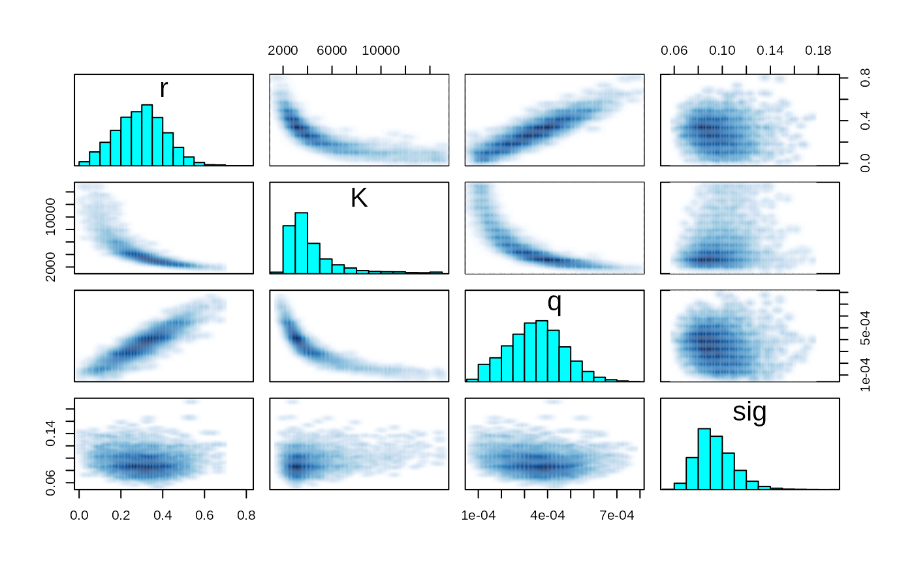
traceplot(fit_hier, pars)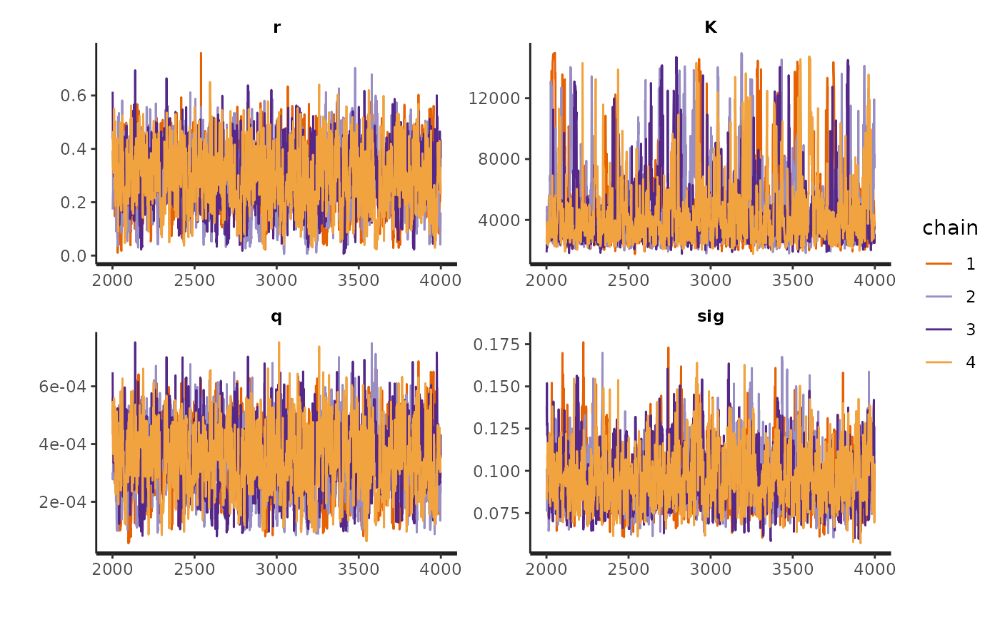
stan_rhat(fit_hier)
#> `stat_bin()` using `bins = 30`. Pick better value with `binwidth`.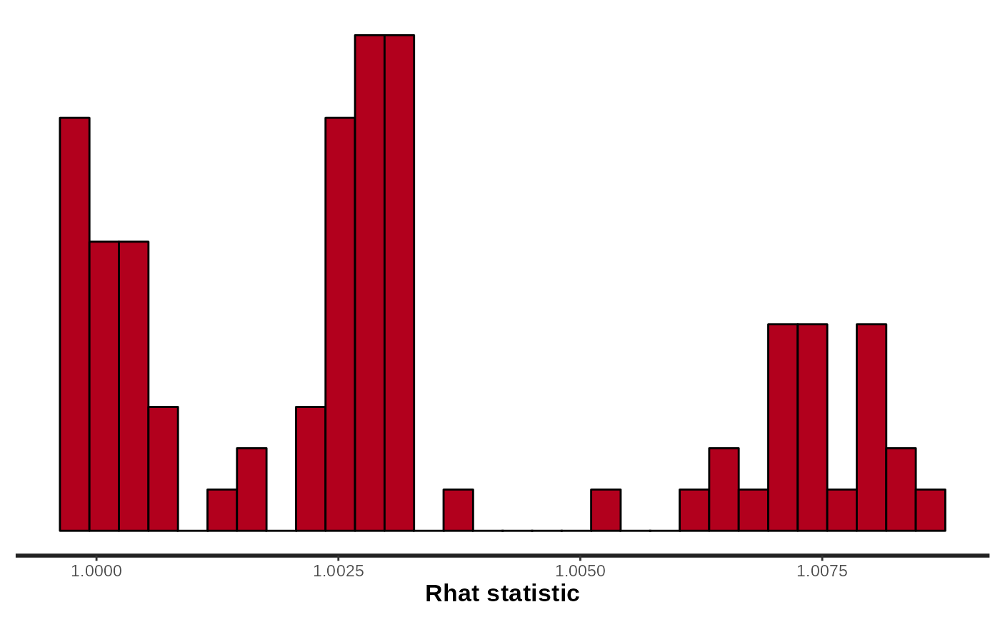
#mcmc_trace(fit_hier, pars = pars)
rhat(fit_hier, pars = pars)
#> r K q sig
#> 1.001974 1.004482 1.000692 1.000704
pairs(fit_hier, pars = pars)
#> Warning in par(usr): argument 1 does not name a graphical parameter
#> Warning in par(usr): argument 1 does not name a graphical parameter
#> Warning in par(usr): argument 1 does not name a graphical parameter
#> Warning in par(usr): argument 1 does not name a graphical parameter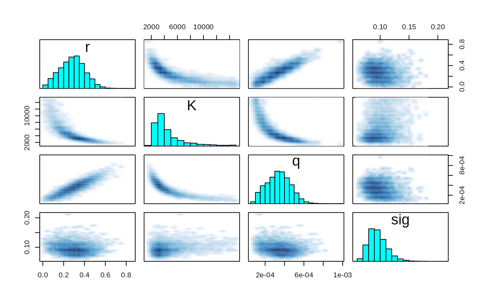
Analysis
df_w <- extract_wider(fit_hier)
df_l <- extract_longer(fit_hier)
df_w %>%
mutate(sig2 = sig * sig,
B_MSY = K/2,
C_MSY = r*K/4) %>%
select(r, K, q, sig2, B_MSY, C_MSY) %>%
pivot_longer(cols = everything(), names_to = "parameter") %>%
group_by(parameter) %>%
# filter(parameter %in% c("r", "K", "q", "sig")) %>%
summarise(Mean = mean(value),
Sd = sd(value),
`q.025` = quantile(value, .025),
Median = median(value),
`q.975` = quantile(value, .975)) %>%
knitr::kable(digits = 5)| parameter | Mean | Sd | q.025 | Median | q.975 |
|---|---|---|---|---|---|
| B_MSY | 2174.69171 | 1132.59716 | 1089.99437 | 1809.47768 | 5752.25294 |
| C_MSY | 268.28650 | 48.97590 | 163.92241 | 269.69003 | 366.48050 |
| K | 4349.38342 | 2265.19432 | 2179.98874 | 3618.95535 | 11504.50588 |
| q | 0.00035 | 0.00012 | 0.00012 | 0.00035 | 0.00059 |
| r | 0.29560 | 0.11706 | 0.07328 | 0.29819 | 0.52404 |
| sig2 | 0.00911 | 0.00316 | 0.00479 | 0.00849 | 0.01683 |
- \(B_{MSY} = \arg \max_{B} h(B) = K/2\)
- \(C_{MSY} = g(B_{MSY}) = rK/4\)
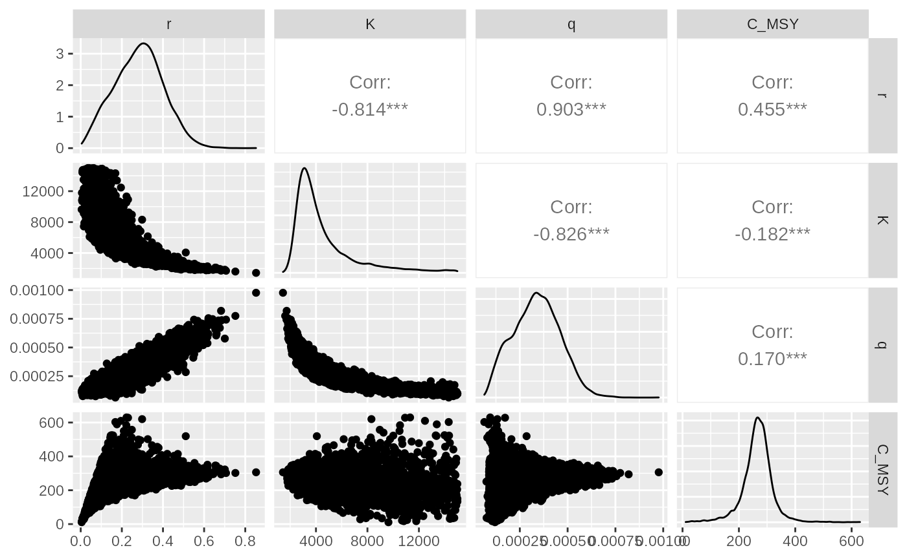
df_l %>%
filter(str_detect(parameter, "I_pred")) %>%
mutate(
id = as.numeric(str_sub(parameter, str_length("I_pred.")+1)),
Year = BioprodNamibianHake$Year[id]) %>%
ggplot(aes(x = Year, y = value, group = Year)) +
geom_boxplot(outlier.shape = NA) +
annotate("line", x = BioprodNamibianHake$Year, y = BioprodNamibianHake$I) +
# geom_line(data = dat, mapping = aes(y = I)) +
ylim(c(0,2)) +
ylab("Abundance indices") +
scale_x_continuous(breaks = BioprodNamibianHake$Year,
labels = BioprodNamibianHake$Year,
guide = guide_axis(angle = 90)) +
theme_classic(base_size = 15)
#> Warning: Removed 163 rows containing non-finite values (stat_boxplot).
#> Warning: Removed 1 row(s) containing missing values (geom_path).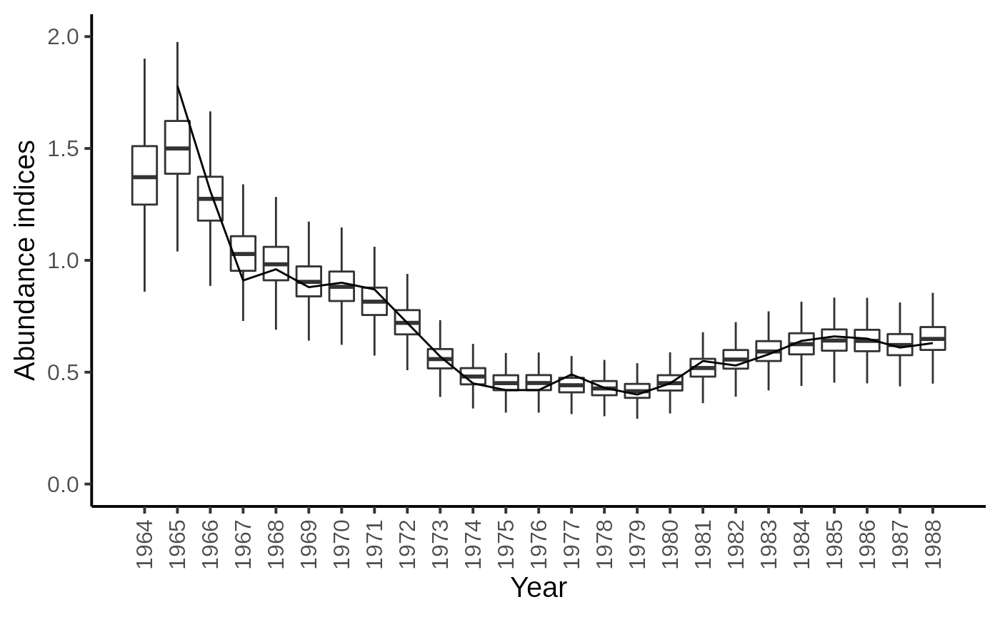
Forecasting the biomass for years 1989 to 1993
df_100 <- df_l %>%
filter(str_detect(parameter, "B_pred100\\.")) %>%
mutate(
id = as.numeric(str_sub(parameter, str_length("B_pred100.")+1)),
Year = seq(1989, 1993)[id],
data_type = "Pred100")
df_500 <- df_l %>%
filter(str_detect(parameter, "B_pred500\\.")) %>%
mutate(
id = as.numeric(str_sub(parameter, str_length("B_pred500.")+1)),
Year = seq(1989, 1993)[id],
data_type = "Pred500")
df_l %>%
filter(str_detect(parameter, "B\\.")) %>%
mutate(
id = as.numeric(str_sub(parameter, str_length("B.")+1)),
Year = BioprodNamibianHake$Year[id],
data_type = "data") %>%
bind_rows(df_100, df_500) %>%
ggplot(aes(x = as_factor(Year), y = value)) +
geom_boxplot(aes(fill = as_factor(data_type)),outlier.shape = NA, show.legend = FALSE) +
ylim(c(0,10000)) +
ylab("Biomass (x 1000 tons)") +
xlab("Years") +
scale_x_discrete( guide = guide_axis(angle = 90)) +
scale_fill_manual(values = c("white", "gray90", "gray50"))+
theme_classic(base_size = 15)
#> Warning: Removed 3161 rows containing non-finite values (stat_boxplot).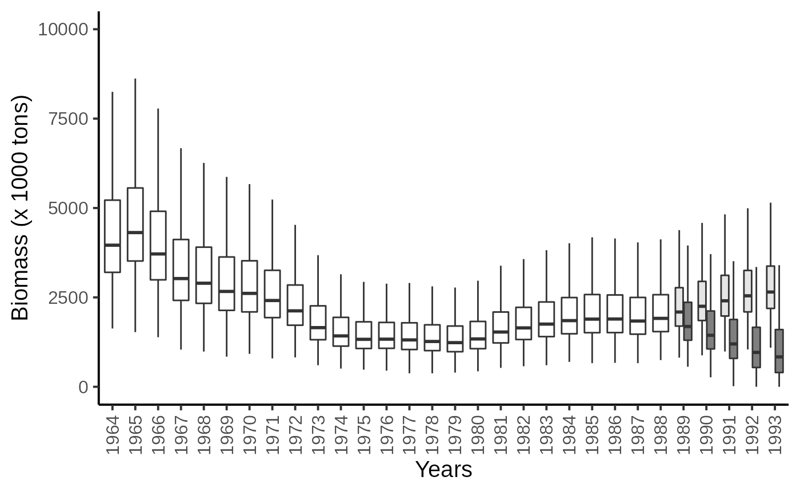
Comparing Schaefer-type versus Fox-type prodcution function
Recall that Schaefer type production function is given by: \[ h(B_t) = r \times B_t \times (1-\frac{B_t}{K}) \], with its associated fisheries management points: \[\begin{cases} C_{MSY} = \frac{r \times K}{4} \\ B_{MSY} = \frac{K}{2} \end{cases}\] The value of the Fox model are as follows: \[ $h(B_t) = r \times B_t \times (1-\frac{\log(B_t)}{\log(K)}) \], with its associated fisheries management points: \[\begin{cases} C_{MSY} = \frac{r \times K \times e^{-1}}{\log(K)} \\ B_{MSY} = K \times e^{-1} \end{cases}\]
stan_model_fox <- "
data {
int N;
int Year[N];
vector<lower=0>[N] C;
vector<lower=0>[N-1] I;
int NF;
}
parameters {
real<lower=0> r;
real<lower=100, upper=15000> K;
real<lower=-20, upper=20> log_q;
real<lower=-20, upper=20> log_sig2;
vector<lower=0>[N] P; //B_t/K
}
transformed parameters {
real q;
real sig;
vector<lower=0>[N] B;
q = exp(log_q);
sig = sqrt(exp(log_sig2));
B = K*P;
}
model {
vector[N-1] h_P;
P[1] ~ lognormal(0, sig);
for (t in 1:(N-1)) {
h_P[t] = r * K * P[t] * (1 - log(K*P[t])/log(K));
P[t+1] ~ lognormal(log(P[t] + h_P[t]/K - C[t]/K), sig);
I[t] ~ lognormal(log_q+log(K*P[t+1]), sig);
}
}
generated quantities {
// Abundance prediction
vector[N] I_pred;
vector[NF] B_pred100;
vector[NF] B_pred500;
for (t in 1:N) {
I_pred[t] = lognormal_rng(log(q*B[t]), sig);
}
// Forecasting the biomass
B_pred100[1] = (B[N] + r*B[N]*(1-log(B[N])/log(K)) - 100) * exp(normal_rng(0, sig));
B_pred500[1] = (B[N] + r*B[N]*(1-log(B[N])/log(K)) - 500)* exp(normal_rng(0, sig));
for (t in 1:(NF-1)) {
B_pred100[t+1] = (B_pred100[t] + r*B_pred100[t]*(1-log(B_pred100[t])/log(K)) - 100) * exp(normal_rng(0, sig));
B_pred500[t+1] = (B_pred500[t] + r*B_pred500[t]*(1-log(B_pred500[t])/log(K)) - 500) * exp(normal_rng(0, sig));
}
}
"
model_name <-"BiomProd_NamibianHake_fox"
sm_fox <- stan_model(model_code = stan_model_fox,
model_name = model_name)
fit_fox <- sampling(object = sm_fox,
data = dat_list,
pars = NA, #params,
chains = 4,
init = lapply(seq(4), function(x)
list(K = 5000, r = 0.3, P = rep(.5, 25))),
iter = 5000,
warmup = 2500,
thin = 1#,
# control = list("max_treedepth" = 12)
)
#>
#> SAMPLING FOR MODEL 'BiomProd_NamibianHake_fox' NOW (CHAIN 1).
#> Chain 1:
#> Chain 1: Gradient evaluation took 3.2e-05 seconds
#> Chain 1: 1000 transitions using 10 leapfrog steps per transition would take 0.32 seconds.
#> Chain 1: Adjust your expectations accordingly!
#> Chain 1:
#> Chain 1:
#> Chain 1: Iteration: 1 / 5000 [ 0%] (Warmup)
#> Chain 1: Iteration: 500 / 5000 [ 10%] (Warmup)
#> Chain 1: Iteration: 1000 / 5000 [ 20%] (Warmup)
#> Chain 1: Iteration: 1500 / 5000 [ 30%] (Warmup)
#> Chain 1: Iteration: 2000 / 5000 [ 40%] (Warmup)
#> Chain 1: Iteration: 2500 / 5000 [ 50%] (Warmup)
#> Chain 1: Iteration: 2501 / 5000 [ 50%] (Sampling)
#> Chain 1: Iteration: 3000 / 5000 [ 60%] (Sampling)
#> Chain 1: Iteration: 3500 / 5000 [ 70%] (Sampling)
#> Chain 1: Iteration: 4000 / 5000 [ 80%] (Sampling)
#> Chain 1: Iteration: 4500 / 5000 [ 90%] (Sampling)
#> Chain 1: Iteration: 5000 / 5000 [100%] (Sampling)
#> Chain 1:
#> Chain 1: Elapsed Time: 3.02093 seconds (Warm-up)
#> Chain 1: 4.20064 seconds (Sampling)
#> Chain 1: 7.22157 seconds (Total)
#> Chain 1:
#>
#> SAMPLING FOR MODEL 'BiomProd_NamibianHake_fox' NOW (CHAIN 2).
#> Chain 2:
#> Chain 2: Gradient evaluation took 2.3e-05 seconds
#> Chain 2: 1000 transitions using 10 leapfrog steps per transition would take 0.23 seconds.
#> Chain 2: Adjust your expectations accordingly!
#> Chain 2:
#> Chain 2:
#> Chain 2: Iteration: 1 / 5000 [ 0%] (Warmup)
#> Chain 2: Iteration: 500 / 5000 [ 10%] (Warmup)
#> Chain 2: Iteration: 1000 / 5000 [ 20%] (Warmup)
#> Chain 2: Iteration: 1500 / 5000 [ 30%] (Warmup)
#> Chain 2: Iteration: 2000 / 5000 [ 40%] (Warmup)
#> Chain 2: Iteration: 2500 / 5000 [ 50%] (Warmup)
#> Chain 2: Iteration: 2501 / 5000 [ 50%] (Sampling)
#> Chain 2: Iteration: 3000 / 5000 [ 60%] (Sampling)
#> Chain 2: Iteration: 3500 / 5000 [ 70%] (Sampling)
#> Chain 2: Iteration: 4000 / 5000 [ 80%] (Sampling)
#> Chain 2: Iteration: 4500 / 5000 [ 90%] (Sampling)
#> Chain 2: Iteration: 5000 / 5000 [100%] (Sampling)
#> Chain 2:
#> Chain 2: Elapsed Time: 3.22891 seconds (Warm-up)
#> Chain 2: 5.35699 seconds (Sampling)
#> Chain 2: 8.5859 seconds (Total)
#> Chain 2:
#>
#> SAMPLING FOR MODEL 'BiomProd_NamibianHake_fox' NOW (CHAIN 3).
#> Chain 3:
#> Chain 3: Gradient evaluation took 2.4e-05 seconds
#> Chain 3: 1000 transitions using 10 leapfrog steps per transition would take 0.24 seconds.
#> Chain 3: Adjust your expectations accordingly!
#> Chain 3:
#> Chain 3:
#> Chain 3: Iteration: 1 / 5000 [ 0%] (Warmup)
#> Chain 3: Iteration: 500 / 5000 [ 10%] (Warmup)
#> Chain 3: Iteration: 1000 / 5000 [ 20%] (Warmup)
#> Chain 3: Iteration: 1500 / 5000 [ 30%] (Warmup)
#> Chain 3: Iteration: 2000 / 5000 [ 40%] (Warmup)
#> Chain 3: Iteration: 2500 / 5000 [ 50%] (Warmup)
#> Chain 3: Iteration: 2501 / 5000 [ 50%] (Sampling)
#> Chain 3: Iteration: 3000 / 5000 [ 60%] (Sampling)
#> Chain 3: Iteration: 3500 / 5000 [ 70%] (Sampling)
#> Chain 3: Iteration: 4000 / 5000 [ 80%] (Sampling)
#> Chain 3: Iteration: 4500 / 5000 [ 90%] (Sampling)
#> Chain 3: Iteration: 5000 / 5000 [100%] (Sampling)
#> Chain 3:
#> Chain 3: Elapsed Time: 3.0416 seconds (Warm-up)
#> Chain 3: 4.43131 seconds (Sampling)
#> Chain 3: 7.47291 seconds (Total)
#> Chain 3:
#>
#> SAMPLING FOR MODEL 'BiomProd_NamibianHake_fox' NOW (CHAIN 4).
#> Chain 4:
#> Chain 4: Gradient evaluation took 2.1e-05 seconds
#> Chain 4: 1000 transitions using 10 leapfrog steps per transition would take 0.21 seconds.
#> Chain 4: Adjust your expectations accordingly!
#> Chain 4:
#> Chain 4:
#> Chain 4: Iteration: 1 / 5000 [ 0%] (Warmup)
#> Chain 4: Iteration: 500 / 5000 [ 10%] (Warmup)
#> Chain 4: Iteration: 1000 / 5000 [ 20%] (Warmup)
#> Chain 4: Iteration: 1500 / 5000 [ 30%] (Warmup)
#> Chain 4: Iteration: 2000 / 5000 [ 40%] (Warmup)
#> Chain 4: Iteration: 2500 / 5000 [ 50%] (Warmup)
#> Chain 4: Iteration: 2501 / 5000 [ 50%] (Sampling)
#> Chain 4: Iteration: 3000 / 5000 [ 60%] (Sampling)
#> Chain 4: Iteration: 3500 / 5000 [ 70%] (Sampling)
#> Chain 4: Iteration: 4000 / 5000 [ 80%] (Sampling)
#> Chain 4: Iteration: 4500 / 5000 [ 90%] (Sampling)
#> Chain 4: Iteration: 5000 / 5000 [100%] (Sampling)
#> Chain 4:
#> Chain 4: Elapsed Time: 4.11373 seconds (Warm-up)
#> Chain 4: 6.24256 seconds (Sampling)
#> Chain 4: 10.3563 seconds (Total)
#> Chain 4:
#> Warning in validityMethod(object): The following variables have undefined
#> values: B_pred100[3],The following variables have undefined values:
#> B_pred100[4],The following variables have undefined values: B_pred100[5],The
#> following variables have undefined values: B_pred500[3],The following variables
#> have undefined values: B_pred500[4],The following variables have undefined
#> values: B_pred500[5]. Many subsequent functions will not work correctly.
pars = c("q", "K", "r", "sig")
stan_rhat(fit_fox)
#> `stat_bin()` using `bins = 30`. Pick better value with `binwidth`.
#> Warning: Removed 1 rows containing non-finite values (stat_bin).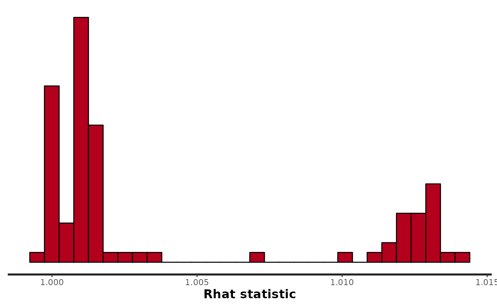
pairs(fit_fox, pars = pars)
#> Warning in par(usr): argument 1 does not name a graphical parameter
#> Warning in par(usr): argument 1 does not name a graphical parameter
#> Warning in par(usr): argument 1 does not name a graphical parameter
#> Warning in par(usr): argument 1 does not name a graphical parameter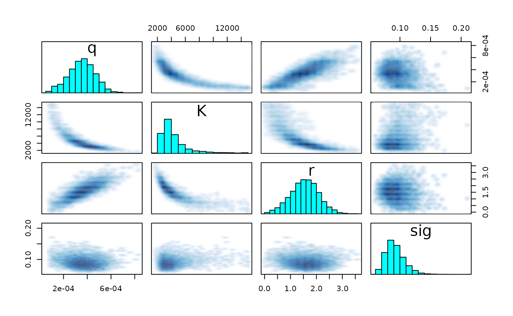
df_l_fox <- extract_longer(fit_fox) %>%
mutate(model = "Fox")
df_100_fox <- df_l_fox %>%
filter(str_detect(parameter, "B_pred100\\.")) %>%
mutate(
id = as.numeric(str_sub(parameter, str_length("B_pred100.")+1)),
Year = seq(1989, 1993)[id],
data_type = "Pred100")
df_l %>% mutate(model = "Schaefer") %>%
bind_rows(df_l_fox) %>%
filter(str_detect(parameter, "B\\.")) %>%
mutate(
id = as.numeric(str_sub(parameter, str_length("B.")+1)),
Year = BioprodNamibianHake$Year[id],
data_type = "data") %>%
bind_rows(df_100 %>% mutate(model = "Schaefer"), df_100_fox) %>%
ggplot(aes(x = as_factor(Year), y = value)) +
geom_boxplot(aes(fill = model),outlier.shape = NA) +
geom_vline(xintercept = 25.5, linetype = "dashed") +
ylim(c(0,10000)) +
ylab("Biomass (x 1000 tons)") + xlab("Years") +
scale_x_discrete( guide = guide_axis(angle = 90)) +
scale_fill_manual(values = c("gray90", "gray50"))+
theme_classic(base_size = 15)
#> Warning: Removed 2858 rows containing non-finite values (stat_boxplot).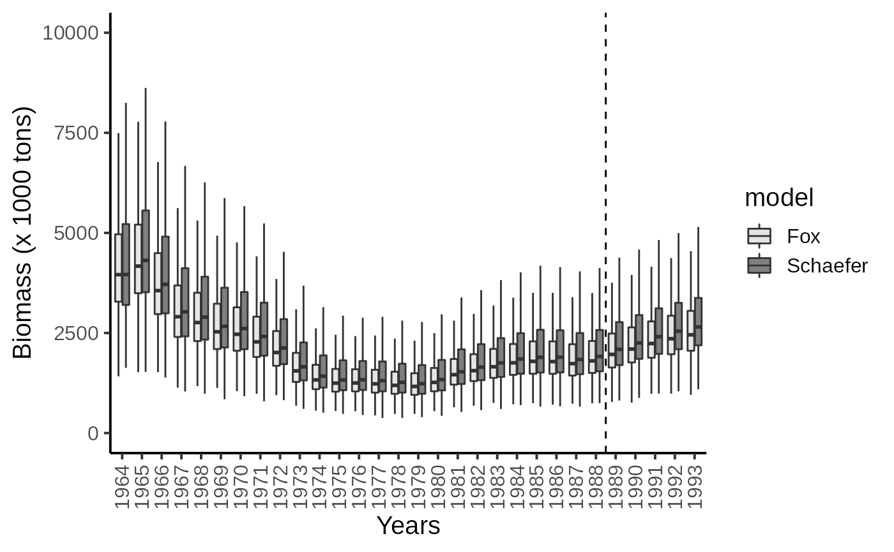
df_w %>% mutate(C_MSY = r*K/4,
Model = "Schaefer") %>%
bind_rows(extract_wider(fit_fox) %>%
mutate(C_MSY = r*K*exp(-1)/log(K),
Model = "Fox")) %>%
ggplot(aes(x = C_MSY, linetype = Model)) +
geom_density(adjust = 2) +
theme_classic(base_size = 15) 
df_w %>% mutate(B_MSY = K/2,
Model = "Schaefer") %>%
bind_rows(extract_wider(fit_fox) %>%
mutate(B_MSY = K*exp(-1),
Model = "Fox")) %>%
ggplot(aes(x = B_MSY, linetype = Model)) +
geom_density(adjust = 2) +
theme_classic(base_size = 15) 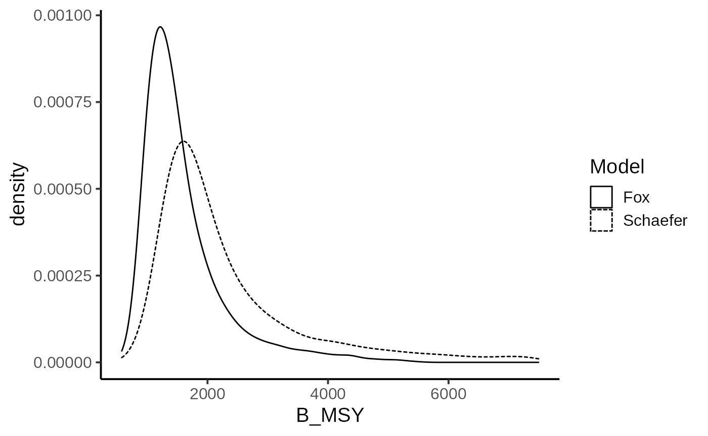
We now look at the chance of the biomass level to be under the Maximum Sustainable Yields biomass. Under the Schaefer production model:
df_w %>% mutate(B_MSY = K/2) %>%
mutate(Depletion_100 = B_pred100.5 < B_MSY,
Depletion_500 = B_pred500.5 < B_MSY) %>%
summarise(`Depletion (100K scenario)` = mean(Depletion_100),
`Depletion (500K scenario)` = mean(Depletion_500)) %>%
knitr::kable()| Depletion (100K scenario) | Depletion (500K scenario) |
|---|---|
| 0.095875 | 0.96875 |
Under the Fox production model:
fit_fox %>% extract_wider() %>%
mutate(B_MSY = K*exp(-1)) %>%
mutate(Depletion_100 = B_pred100.5 < B_MSY,
Depletion_500 = B_pred500.5 < B_MSY) %>%
summarise(`Depletion (100K scenario)` = mean(Depletion_100, na.rm = TRUE),
`Depletion (500K scenario)` = mean(Depletion_500, na.rm = TRUE)) %>%
knitr::kable()| Depletion (100K scenario) | Depletion (500K scenario) |
|---|---|
| 0.0213 | 0.9240765 |